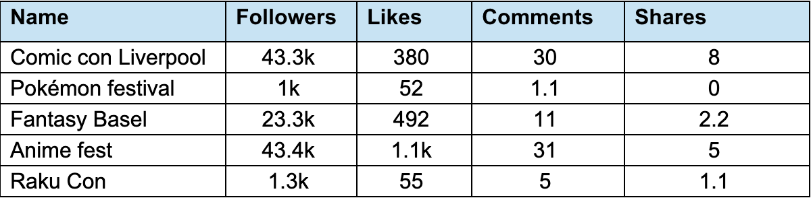
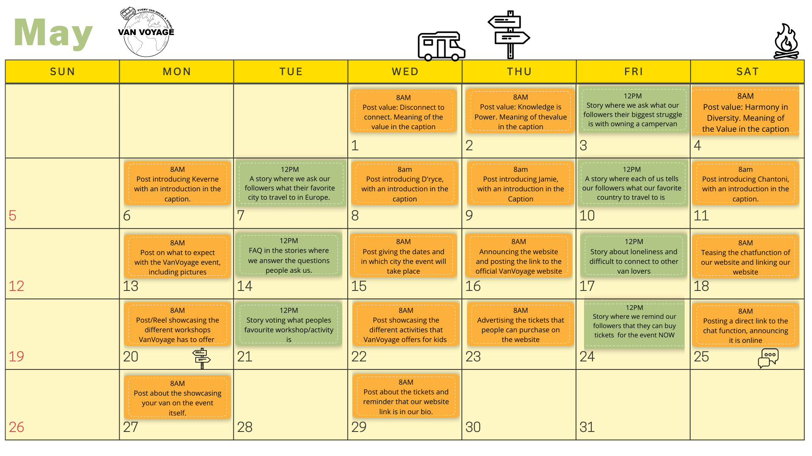

General Information
This branded website is publicly available at vanvoyage.github.io/VanVoyage/
This website was created by
- Jamie Bron (ID: 221916)
- D'ryce Bessems (ID: 220814)
- Keverne Arthur (ID: 210833)
- Chantoni Da Cunha (ID: 222170)
Content
Please clarify here the match between students and pieces of content. Make sure that you provide a link to the correct page within the website
| # | Student ID | Value | Name and link of content |
|---|---|---|---|
| 1. | 210833 | Vision and Values | Vision and Values |
| 2. | 221916 | Tickets | Tickets |
| 3. | 220814 | Home Page | Home Page |
| 4. | 222170 | Events | Events |
Production
Design Elements
Justifications for the following design elements: Colour palette, font, user interface paterns
-
- #FF883F The color orange, evokes a feeling of creativity and adventure. Adventure is also an important part of the target audience and Van Voyage strives to provoke the adventure in each individual.
- #B1C865 Green evokes a feeling of inspiration and freshness. We would want many to feel inspired when considering the opportunities they can endure.
- #FFDE00 The color yellow was chosen evokes a feeling of newness and brightness which represents the new enjoyable experiences that the user will endure.
- Font: Millennials today are living more of a minimalistic lifestyle which includes how they travel. Minimalism is the act of reducing materialistic things, but in this case, it is simple yet effective. Public Sans is a great simple font to evoke that minimalistic aesthetic. It is a neutral and sleek font that does not take the experience away from the user when browsing through the website.
- The carousel for the event is chosen so that the visitors of the website can browse through some pictures that were taken on previous events. This will give them an clearer view on the event itself and helps them create an image on what to expect on the event of Van Voyage.
- The cards are an easy way to display multiple tickets that Van Voyage offers for their event. This way the customer can really easily select which ticket they want and need for booking the event for themselves.
- Throughout the website there are mutiple buttons on which a customer can click so they can be lead to the ticket page. The buttons make sure the different page are easier to find and that the uiser doesn't have to constantly go back to the navigation bar.
- The information architecture took a while to figure out. The decision was made to make the event and the tickets page on seperate pages as to not overwhelm the customers with information. This would give them a neater overview on what the event itself entails and the different options for the tickets there are available. The values and vision got their own page, as once again, putting them with the team would be overwhelming.
- How does this relate to our target audience?
- Millenials often go for a clean and minimalistic aesthetic. To fit in better, Van Voyage decided to follow this route in their website to appeal more to their customers.
- The minimalistic atmosphere of the website matches the minimalistic posts of our social media campaign. Furthermore, the color palette is visible in both the website and the social media, making it easier for customers to connect the two to each other.
- The unique value propositions of Van Voyage are the fact that there is an event for campers, which currently does not exist yet. The fact that this is largely advertisted on our website makes this value proposition easy to spot. Another value propostion was to make it easier for the people of our target audience to connect with each other, which is helped through the forum, where camper van users can interact with each other and engage in each others posts.
Credits
Credited work from our website
- Images. All Images used on the Van Voyage website came from the website Pexel.
Testing Report
The website of Van Voyage was tested on 5 diffent people from the target audience. 2 of these test were done on the phone, 3 via the laptop. Evidence of our testing is visible in appendix 1
- We were trying to learn about how easy it is for the users to navigate the website by completing specific tasks designed for exploration of the website. Furthermore, we want to ask our target audience what they thought of the design of the website, including the colors used.
- For our testing we took the following steps to get a better result:
- We had 5 different members of the target audience test our website, which were all done on different devices.
- The testing was done on campus, where we could find majority of our target audience walking around.
- For the testing, we had one of our production team filming the interviews and screens, whereas another team member was asking our target audience the questions. These were the following tasks:
Can you book a ticket for a family?
Can you meet the team?
Can you find the discussion section?
Do you understand what our website is about?
What do you think of the colors used in the website? Do you think the website is easy to use? If yes, why? If no, then why not?
Should we add anything else to our website?
- The result of our testing
- Overal, most of the testers thought that the website was easy to use and navigate. The pictures and videos used were very inviting and very fitting to the view of the website. However, there are some inconsistencies with the colors, namely the orange not really coming back. The Navigation bar being orange also was very distracting and therefore after the same reaction of the first two testers, it was changed to green, as it appeared easier to the eyes of the testers. The home page has too much text on the page, and it caused the page to feel overwhelming. For future improvements, the website needs to be more consistent with the colors used on the website. The family tickets also aren't nice to put down, as not every family is made up of 2 adults and 2 kids. Lastly, there is the suggestion of a shopping cart or an overview that shows the visitor the tickets that they have selected for the event.
Marketing
Context of campaign and promotional activities
The campaign presented was about showing and executing ideas to the public on what our event Van Voyage was all about. Like the event, we wanted to evoke the emotion of creating new experiences while meeting new people. We created both Facebook and Instagram to reach our target audience.
The objectives are the following:
Reach
We are entering the market as the first official campervan convention in Europe. For our marketing campaign we looked at what other European conventions did on social media. With a sample size of 5 accounts, we found that for Instagram these companies have an average of 22.4k followers with the largest amount being around 43.4k and the lowest amount being around 1.1k.
Each post has an average of around 415 likes per post with the largest amount being around 1.1k and the lowest amount being around 52. Each post has an average of 15.6 comments with the largest amount being around 31 and the lowest amount being around 1. Each post has an average of 3 shares with the largest amount being around 8 and the lowest amount being around 0.
Each post has an average of around 86 likes with the largest amount being around 300 and the lowest amount being around 22. Each post has an average of 13.2 comments with the largest amount being around 50 and the lowest amount being around 3. Each post has an average of around 8 shares with the largest amount being 15 and lowest amount being 3.
Instagram Reach Justification (Likes comments and shares are estimates calculated by the last 30 posts)
Obviously, we’re a new company so we have decided not to set extremely high goals yet. We want to start by aiming for at least 80 followers on our Instagram account. Furthermore, we hope that every post gets at least 1 comment, at least 1 share and around 20 likes. These numbers seem reasonable in comparison to the results shown in the table above. We want to achieve these goals by the 31st of May.
Affect
After watching our social media page, our target audience should feel excited and want to join the vibrant community of Van Voyage and not want to miss a single post from our social media.
Response
We want our target audience to click the link in our bio and visit our website to where they can buy tickets for the event. We also have plans for various collaborations with companies and people like travel influencers for giveaways to further give our target audience more incentive to visit our website.
Brand Campaign
Content Calendar
 Content CalendarLearning Points
For the social media planning, we decided to research what the best time and day is to post on Facebook and Instagram. We discovered that statistically between 4-5 pm the most amount of people is online specifically on Wednesdays and Thursdays, but after posting for 2 weeks the Meta business page recommended us to post on Mondays and Tuesdays around 8 pm. This was because Meta noticed that most of our followers were online at these specific times. What did not go so well was the fact that we had no engagement on our Facebook page. Joining camper van users Facebook groups would have been a better option to allow people to see our page. We have learned that although Facebook is a platform that camper van users use a lot, maybe considering newer platforms like TikTok would also be a nice choice because many people of all ages are now familiar with TikTok whether they have the app or not.
Future Planning
We really do believe that having a TikTok page would attract a greater audience and possibly send viewers to our Facebook page as well. If the campaign continues, we will result in more offline promotions and speak to more campervan users. This way word of mouth would spread faster and create awareness of who we are as a brand. Implementing local campervan users as the face of our campaigns would be a great initiative with videos of people speaking and explaining the event rather than a picture with a caption and music over it. Pertaining to the assignment itself, we believe that increasing the number of posts we post per week would be beneficial to have a better overview of our campaign. As well as including more interactive stories as well. In addition to that, we would decrease our objectives for likes and followers to lower our expectations.
Reach
We hope our target audiences will continue to visit our website to buy tickets. We also hope that our collaborations will grow and hopefully we can even break through to the mainstream side of advertisements and be well known globally.
Affect
We hope to always have the same effect as we originally wanted at the beginning of our journey as a company.
Response
Before making an accurate decision on what we want our future media objectives to look like we will revisit the accounts used in our research and measure their growth to finalize a realistic decision for our future. However, for now, after hopefully achieving our media objectives, we want to raise the bar of our Instagram followers from 80 to at least 480 For our likes, comments and shares, we hope to have at least 20 per post and for likes, we hope to have at least 50 We want to achieve these goals by the end of the 31st of July.
Professionalism
Management
Lean Canvas
Lean Canvas |
PRJ4 |
Class 2 Group 4 |
||
ProblemTop 3 problems
|
SolutionTop 3 features
|
Unique Value PropositionSingle, clear and compelling message that states why you are different and worth buying Vanvoyage is an exciting community event where camper van enthusiasts of all ages come together to learn, compete, and most importantly make lifelong connections. With workshops, competitions, and family-friendly activities, Vanvoyage offers an impactful experience that celebrates the spirit of traveling and adventure. |
Unfair AdvantageCan’t be easily copied or bought
|
Customer SegmentsTarget Customers
|
Key MetricsKey activities you measure
|
ChannelsPath to customers
|
Cost StructureList your fixed and variable costs.Customer acquisition costs Distribution costs Hosting People Etc.
|
Revenue StructureList your sources of revenue.Revenue Model Life Time Value Revenue Gross Margin
|
Fill in at least 2 bullet points per building block and according to the rubrics.
Problem
- The top 3 problems in our target audience are the loneliness on the road, the fact that a lot of people can't find a buddy on the road, and it is difficult finding like-minded people.
- Through our event, people can find other like-minded individuals with who they can travel with on vacation. Through the forum page on our website, they can also very easily get in contact with these people if they end up with questions after the event that Van Voyage organizes.
Solution
- Vanvoyage creates an event where campervan lovers can come together and meet up. This is an annual event that is hosted in a different country each year. At this event, there are a lot of opportunities to come together and meet new people. There are workshops, competitions, food and drink stalls, meeting places, kid's playgrounds and even indoor wall-climbing facilities. And on top of that we even have our online community forum on our website, so that people can even meet up outside of our event.
This event tackles the problem of people not finding like-minded people to connect with. The forum itself tackles all these problems, by offering people a medium to post requests looking for a travel buddy. But the forum can also be used for travel tips, and advice, or just use it as a communication medium to make new friends.
Customer segments
- Families, younger couples, travel lovers, people who prefer to travel on a budget and glampers
- Because of the broad target audience, we have three brand personas. These are:
Vantoni is a full-time content creator that loves adventure! Her catchphrase is "Jobs fill your pocket, but adventures fill your soul." She regularly rents a campervan a few times a year to explore different parts of Europe. However, even though she enjoys the campervan style of travel, she really wants a fun way to meet other campervan users.
Van'ryce is an engineer that loves camping! He built his own campervan and uses it to travel. His spouse isn’t a fan of campervans though so van’ryce mostly travels alone. He loves his spouse, but he really wants to find some van friends to travel around with.
Vamie is a flight attendant that loves travelling! Even though she spends most of her time in the air, she adores the feeling of the road. Her spouse and their children love spending their summer travelling in a campervan, but they really want to meet other campervan families.
Unique value proposition
- Vanvoyage is an exciting community event where camper van enthusiasts of all ages come together to learn, compete, and most importantly make lifelong connections. With workshops, competitions, and family-friendly activities, Vanvoyage offers an impactful experience that celebrates the spirit of traveling and adventure.
Unfair advantage
- Because Vanvoyage is the only event that caters to campervan travelers and adventurers, we already have a big advantage regarding interest. So, with that, we can make strategic partnerships with high-end brands in the travel industry, and they could offer us resources, sponsorships and promotions.
- Because Vanvoyage is the first event of the sort among campervan users, we are going to be the main base for the people to meet up and form a community. This way we are the foundation of the community, and then more and more people will join this exciting event. As the community grows even bigger, we eventually will be a staple brand in the campervan community.
Channels
- For Vanvoyage we are using social media and our website to communicate with our target audience. These channels are direct and our own. Since we are renting a pretty popular venue, we can reach out to an even bigger audience than we can ourselves. This venue is also in contact with our target audience through emails and advertisements. These emails and advertisements are examples of partnered direct channels and the advertisements are an example of a partnered indirect channel.
- Awareness: We are going to raise awareness about our company by having advertisements throughout the country where we are organizing the event. But the most attention we are aiming to get is through paid advertising on social media. So, the algorithm can target campervan users throughout Europe.
- Evaluation: So, after people become aware of our specific event, we are going to direct them toward our social media and website. Here the target audience can experience what we stand for and read and see our values.
- Purchase: In these advertisements, we would invite the target audience to “Buy tickets now on our website!” with a QR code that directs the target audience to our ticket sale page on our website. People also can visit the ticket sale page by clicking on the button when visiting the website themselves.
- Delivery: By wisely posting on our social media pages, we can show and convince our target audience that Vanvoyage is the only event made by and for campervan users.
- Sales: After the customer has purchased a ticket for the event, they can ask questions by either filling out a customer question form or by giving us a call. The customer will always be held up to date by the emails we are sending them.
Key metrics
- Tickets, with tickets we measure how many people come to our events.
- Activity involvement, by measuring the number of signups for the activities we can see what the people are into or not. This way we know what people like for future events.
- Social media engagement, with the analytics that we get from our social media pages and pad advertisements we can see how much traction our event gets online and how many people interact with our links and posts.
Revenue streams
- One of the most obvious ways we get revenue during our event is ticket sales. While looking at the ticket prices of events that are like ours but address a different target audience, we can use similar rates. Looking at, for example, the Huishoudbeurs or Vakantiebeurs their tickets are priced in a range between 14-19 euros (Huishoudbeurs, 2024). So, if we stay within a similar range our tickets are being sold for 15,49 per ticket. Then we are going to look at how many tickets we are going to sell for our event and look at how Vakantiebeurs had around 71.000 visitors last year (Vakantiebeurs, 2024). Of course, we are not as big as the Vakantiebeurs, but we have the unfair advantage that we’re the only event like this, so we’re aiming lower but not by a lot. We are aiming for around 61.000 tickets sold so that means a ticket revenue of 61.000 x 15,49 = €944.890, -
- The second way we get revenue is out of the vendor spots we sell. At our event, we will make room for a lot of external companies that want to directly reach out to their target audience. Think of campervan sellers, tent sellers, food and drink stalls, traveling gear, etc. These companies are allowed to have their stand at our event for a little fee. When looking at the Huishoudbeurs they have an average price of 671 (Huishoudbeurs, 2024) Then we look at how many vendors we can expect. Vakantiebeurs last year had 1052 vendors, so if we take that number and of course put it down a little bit. So, let’s say 600 vendors. We calculate a vendor fee of 600 x 671 = €402.600, -
- Finally, we have workshops. We have different kinds of them and on average they will cost about €60, - per ticket. Each workshop will last 1,5 hour and then the people who give the workshop have a 30-minute break. So, each workshop lasts 2 hours. The event lasts for 8 hours so there can be 4 workshops held per kind. 4 x 3 = 12 workshops a day. Since our event lasts for 5 days we can have 60 workshops in total. There will be around 200 spots per workshop. So, in the end we can sell 12.000 workshop tickets. So, we get a revenue of workshop ticket sales: 12.000 x 60 = €720.000, -
- Our estimated revenue for our first year will then be 402.600 + 944.890 + 720.000 = €2.067.490, -
Cost structure
- Of course, with an event we need a venue, when looking at the pricing of venues it differs for what kind of event you are planning to hold. Since venues always work with quotes it is very difficult to know how much money it’s going to cost to rent out a venue. But there’s a way we can calculate at least an estimate. By looking at the Ziggo dome for example, Ziggo dome has a venue that fits 17.000 people and is 180m2 in size (Ziggodome, 2024). Renting this venue costs €28.000, - including personnel (3FM, 2020). So, that means on average you pay €28.000 / 17.000 = €1,64 per person. Going by that rate and comparing that to our ticket sales we can estimate how much it’s going to cost us to rent out a venue that fits our capacity of around 61.000 visitors. So that means 61.000 x €1,64 = €100.040 per day. Our event lasts for 5 days, so that means 5 x €100.040 = €500.200, -
- Then we also need a permit to organize the event. According to the municipality of Utrecht, permits are priced between €231, - and €6.000, - (Gemeente Utrecht, 2024). Assuming it’s a big event, but of course not a city-wide event, we’re aiming for around 5.000 a day. So, 5 x 5.000 = €25.000 in permit costs.
- Then we also have advertisement costs. We are focusing on advertising mostly online since with Instagram algorithms we can reach our target audience as effectively as possible. For Instagram we want to reach about 100.000 Instagram users, Instagram asks 6,18 per thousand reaches (Basque, 2024). So, 100.000/1000 = 100. 100 x 6,18 = €618, - for Instagram advertisement.
- So, our cost structure is in total 500.200 + 25.000 + 618 = €525.818,-
Services/products
- Vanvoyage is a brand for all travelers and adventurers who are campervan lovers. Whether you’re the adventurer type, the glamper type, or the family type. Our brand is there to unite all different kinds of camper van users. To find any problem within the campervan community we conducted problem interviews. From these interviews, we found problems within the campervan community. These problems are: Not having a way to encounter other campervan lovers, campervan users feeling lonely when on the road, and there’s no specific way to find traveling buddies while on the road. To cater to these problems Vanvoyage created an event and an online forum where people can meet up with each other in real life or submit requests/give advice online during their travels on our online platform. During our event, Vanvoyage offers different types of entertainment that attract different kinds of campervan lovers. During the event our visitors can indoor wall climb, participate in competitions, do several workshops and there is a big area where kids can play as well. People can meet like-minded people during this event so they can make traveling buddies for life. And if people are on the road and are still looking for advice or traveling buddies, they can just make a post on our website. This way other people who can give advice or want to be their traveling buddy can just respond and tag along on the other person’s journey. This way we solve loneliness on the road of camper van users.
- This event and forum fit our brand identity, because it ties perfectly with our brand vision. “At Van Voyage we believe that every van holds a story, and we want to create a place where people from different backgrounds and cultures across Europe come together to share their beautiful experiences.”
Validation of Assumptions
Before conducting interviews, we made a lean canvas (version 1) based on our assumptions and no research beforehand. In the building block “Problem” we assumed that the biggest problem of campervan users was going to be the costs of driving and owning a camper van. So, in the “Solution” building block we wrote down that Vanvoyage is going to offer a campervan rental service so that everyone can enjoy the pleasure of traveling with a campervan without any long-term costs. However, after conducting the problem interviews, we decided to have a Problem and a Solution pivot. Since we discovered that money is indeed a small issue since owning and traveling in a campervan can sometimes be very expensive. But people can get over that problem. The biggest problem that camper van users have currently is the feeling of loneliness of travel.
The unique value proposition we had on our first lean canvas goes as follows: “Van Voyage brings the joy of traveling with a campervan to your doorstep in a very accessible way! Vanvoyage is there for people who don’t have a camper van because of budget or personal issues. Now with Vanvoyage, you can rent out one without thinking of wasting money!” However, after we conducted our problem interviews, we had to have a Problem and Solution pivot. And with those kinds of pivots, you also need to review and rework your unique value proposition. So, we decided we would have a unique value proposition pivot and change that into what we now have which goes as follows: “Vanvoyage is an exciting community event where camper van enthusiasts of all ages come together to learn, compete, and most importantly make lifelong connections. With workshops, competitions, and family-friendly activities, Vanvoyage offers an impactful experience that celebrates the spirit of traveling and adventure.”
Appendix
Please use the list below to provide links to evidence for all parts of your justication. Please double-check all links before delivering the website. Do not hesitate to refer to these numbers above.